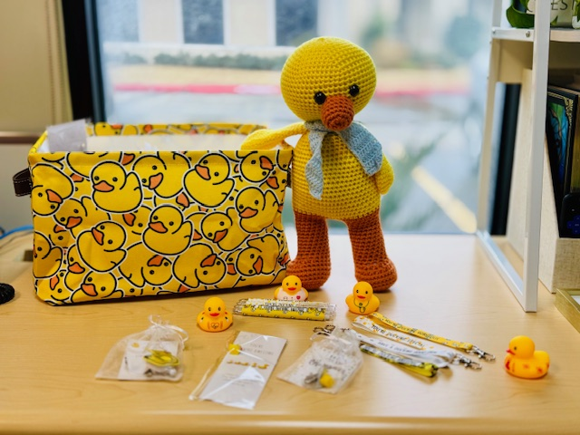
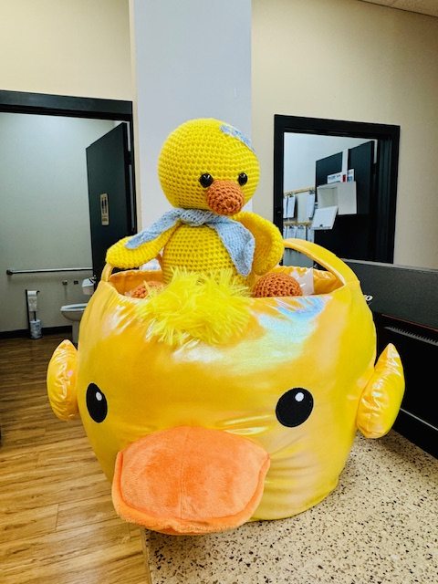

Ducks in a Row Initiative
Driving Alignment, Accountability, and Clinic Growth


In 2025, I developed and led the “Ducks in a Row” Initiative across a network of urgent care clinics to strengthen operational alignment, increase staff engagement, and drive measurable clinic performance.
A unified standard of excellence connecting daily team actions to the organization's broader mission and patient care expectations.
Each “duck” represented a key performance area essential to clinic success — patient experience, operational efficiency, compliance, and visit growth. By simplifying complex organizational goals into focused, trackable priorities, teams better understood expectations and took ownership of outcomes.
To build engagement and sustain momentum, I introduced a recognition component centered around a traveling symbol of success: “Sir Feathers Waddleton.” This created a fun, visible way to celebrate high-performing clinics while fostering friendly competition and team pride.
Stronger Staff Engagement
Teams actively monitored performance and identified improvement opportunities, increasing accountability at every level.
Cross-Clinic Collaboration
Clinics regularly shared best practices, creating consistency and stronger communication across the market.
Enhanced Goal Clarity
Staff developed a clear understanding of how their individual roles contributed to organizational success.
Supported Clinic Growth
Focused attention on key metrics contributed to increased patient volume, improved workflows, and higher satisfaction.